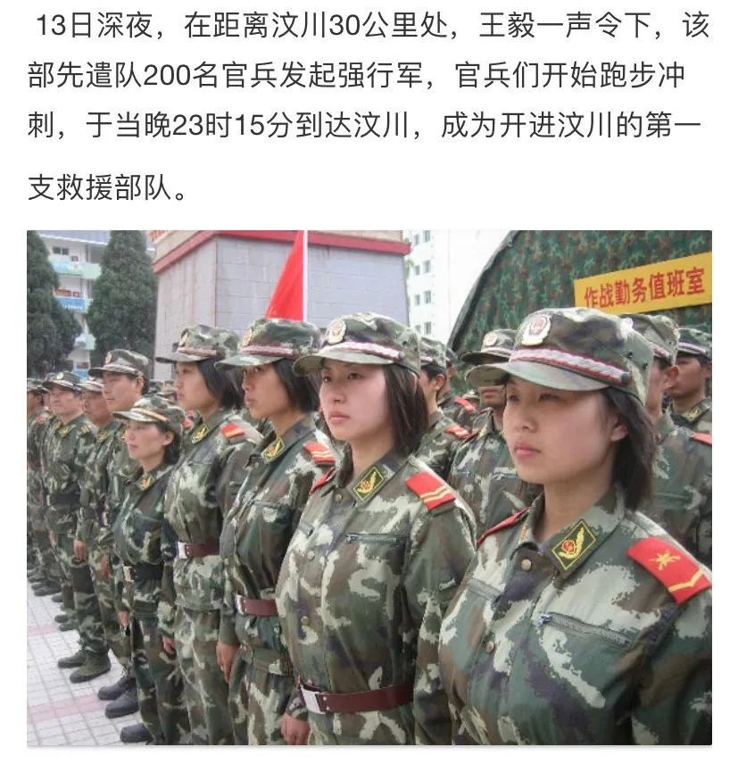

热点2022年5月|职业女性面临的选择与困境

编辑：杜舒懿
数据来源：闪闪
0
1资讯 |中国女性职业选择与风险管理白皮书——复旦发展研究院与中宏保险联合发布
女性职业选择与风险管理
我国男女性在就业市场中存在较明显的差异，这首先体现在职业选择方向上：男性更倾向于选择传统制造业、IT行业，而女性更倾向于选择批发零售、医疗、教育等服务行业。男女性在职业选择过程中也存在差异：男性多在操作与技术岗位，而女性多在职能部门。此外，男性在中高级技术人员和管理层中比女性占比更多。
在收入方面，两性差距仍然存在，总体平均月收入上男性高出女性近1800元，但是我们观察到，这种薪资差距正在逐年缩小，两性在职场中的待遇正在向公正公平的良好方向发展。
在职业选择的价值排序中，根据我们的问卷信息，男女性受访者都最看重企业文化和工作氛围，但是女性受访者相较于男性更看重与家人相处的时间（女性49.8%，男性45.1%），而男性则更看重薪资水平（女性61.1%，男性66.0%），这表明相较于男性，女性在职业选择中会更倾向于“顾家”。但是， 80后、90后城市女性则表现出一定的不同，他们当中，男性反而比女性在职业选择中更看重与家庭的平衡，显得更“顾家”，而年轻的职场女性则更要求自身的发展和突破。这一点非常有趣，可能代表着我国社会的性别分工已经发生了改变，女性正在为国家建设贡献越来越多的力量。
从国际宏观数据来看，全球男女两性在职业选择中的差异化境况与我国现实情况类似，两性在行业、职业、职级、薪资等方面仍然存在较多差异，但是从时间维度来看，这种差异正在缩小。
我们认为，女性职业人在其职业选择中可能面临以下几种风险：“35岁困境”、科技冲击下的替代风险、怀孕风险、性别歧视和性骚扰。同时，我们也认为女性职业人存在着一些机遇与优势，例如，女性在财会、公关、设计等某些领域具有职业优势，全球化和信息化浪潮下有着新的就业机会。
对于职业选择风险管理，我们建议：第一，在个体层面提高自身的职场适应力，把握确定性，削减不确定性；第二，在组织层面注重员工职业发展和文化管理，营造平等、开放、包容的职场环境；第三，在国家和社会层面从法律和工会等方面保障劳动者的权益，并创造健康的外部社会舆论和文化环境。只有通过个人、组织、国家和社会多方的共同努力，才能实现女性职场人职业选择的风险可控。
职场女性生存状况与风险管理——以女性保险代理人为例
各个年龄的职业女性正积极地参与劳动力市场，其就业受到市场规律的调节，受教育程度与男性的差异正逐渐消失，拥有不容忽视的就业竞争力。
职业女性求职的价值偏好，一是从业限制小，二是晋升机制公平透明，三是工作强度适中以兼顾家庭，四是需保证一定的薪资水平。
女性在社交导向和岗位及团队协作性较强的岗位中具有优势，享受具有团队感的工作环境，也对“支持性职场”有强烈向往。
针对女性的性别歧视并不只存在于外在的机制，女性的生理特征还会对职业发展产生潜在但不可忽视的影响，如生育的影响、生理期易情绪化等。
女性受教育水平与男性的差距正在缩小，从业年限与经验的积累也不会与男性拉开较大的差距。但由于女性往往以家庭为生活中心，社交圈与人脉较于男性相对受限，家庭羁绊也导致女性无法承担过高强度的工作，且更容易受到社会价值观的质疑和家人的不理解。因此，女性在职场中面临更大的竞争压力。
职场女性的诉求，一是更多合适的工作机会，二是有效的就业创业扶持政策，三是性别公平的职场环境，四是客观评估与正确利用自身的优劣势。对此，国家、行业企业与女性个人需从各自的层面去应对。
后疫情时代和科技发展对女性职业选择的影响
疫情的暴发严重冲击了社会发展，对女性职业发展的稳定性和长远规划都造成了较大的影响，每八位女性受访者就有一位职业发生变动，且有超三分之一的受访者表示因疫情被迫改变就业城市，后疫情时代经济增速减缓、波动变大，女性职业选择的机会相对减少，且影响深入，甚至产生失业问题。
对人群流动及民众可支配收入依赖度较高的行业如服务业等在后疫情时代受到冲击，73.1%的女性保险代理人受访者认为疫情期间客户可用资金减少，且认为疫情造成了严重的交流不便。
超过80%的女性保险代理人受访者认为后疫情时代公众风险意识有所增强，进而推动了保险行业的发展，增大保险行业从业人员发展空间。
长期来看，科技发展通过技术的自我革命提供了更多的职业选择，创新了职业发展模式，为女性职业选择提供了更多的发展空间。
女性职业选择风险总结
个人层面：第一，同男性一样，随着年龄的增长，女性精力集中度可能下降，工作效率可能降低，同时女性获取新知识的能力远不如前，随时面临被职场新人替代的风险。第二，生育将会使女性面临较大的身心挑战，并且接受更多外来压力。第三，传统观念下，女性对家庭的高度责任感使得女性面临更多家庭与工作之间的平衡矛盾，这也会降低女性的工作幸福感。
组织层面：第一，在企业降低人力成本的要求下，用人单位会在替代性较强的岗位更倾向于使用职场新人，而因偏好行业替代性相对较强、存在“母亲代价”等多重因素，女性则面临更多职业变动的风险。第二，现实生活中职场女性在高级职位或决策层的竞选中面临更多的阻挠，使得女性职业晋升道路愈发艰难。
社会层面：第一，宏观上来说，女性更倾向于选择就业于第三产业，但是第三产业相对产业升级转型更快，对女性的职业技能提出了更高的要求，因此一定程度上为女性带来了更高的挑战。第二，科技的迅猛发展使得技术型失业逐渐扩大，新的技术、新的机器将会替代更多的人工岗位，不仅挤压了女性职业选择空间，还增加了其他女性的就业压力。第三，社会中对女性存在由来已久的印象使得女性面临更多的性别歧视甚至性骚扰。
女性职业选择风险管理建议
（由于内容较多，仅节选个人层面上的建议）
保持终身学习理念，提升自身人力资本。无论是一般的职业晋升需要，还是时代发展大势所趋，女性想要更好的职业发展就需要不断提升自我素养。保持终身学习习惯，不断吸收新的知识，掌握新的技能，才能在宏观环境变动中始终掌握主动权。
完善职业认知，做好长远职业规划。最好的职业选择风险规避方法就是清晰认知经济社会发展，从中正确选择发展潜力大、适合自身特点的职业，进而设定正确的职业发展目标，才能将诸多风险扼制在摇篮里。
提前认知风险，充分运用多种风险转移工具。女性需要对自身职业发展的风险进行提前认知，综合考虑家庭、公司、行业、政府等各个层面的因素，挖掘自身发展的风险。在风险规避与风险控制之外，更是要学会灵活运用保险等多种风险转移手段，将自身风险降至最低。
来源：2021《中国女性职业选择与风险管理白皮书》
当地时间5月3日晚，成千上万的抗议者聚集在位于美国华盛顿特区的最高法院前，捍卫美国女性的堕胎权。
这已经是示威者连续第二晚的抗议活动了。美国政治新闻网2日披露一份的文件显示，美国最高法院试图通过推翻“罗诉韦德案”的历史性判决，取缔对女性堕胎权的宪法保障，交由各州的法律自行决定。此文件一经泄露，立即在全美各地引发震荡。
尽管拜登和最高法院已作出回应，但并未平息民众怒火。截至目前，得克萨斯州、马萨诸塞州、纽约市、洛杉矶市、丹佛市、波特兰市等全美各地陆续出现了抗议示威活动，并与警察发生了不同程度的暴力冲突。此外，名为“全美行动周”的示威计划将于5月8日至14日全面展开。（四川观察）
人民的姊娣兵| 如何评价韦慧晓？她值得
澎湃新闻记者4月23日从中山大学校友会方面获悉，中山大学校友韦慧晓已经成为中国海军首位女舰长。
中山大学校友会方面介绍，韦慧晓2004年以第一名的优异成绩入读中山大学地球科学与工程学院（原地球科学系）研究生，在读期间曾赴西藏支教，2011年博士毕业。她曾拒绝百万年薪，以博士身份特招入伍。
韦慧晓说：“我的价值观，是让一块不贵的手表，因为我戴过了而身价百倍。”入伍十年，如今，她已正式成为中国海军首位女舰长。韦慧晓校友用自己勇敢、丰富的人生历练，谱写了一曲奉献青春和报效祖国的赞歌，展现了昂扬向上的奋发精神。
根据《解放军报》、《中国青年报》、《解放军生活》杂志等官方媒体公开的信息，韦慧晓，女，壮族，1977年11月出生，中共党员。韦慧晓本科在南京大学读大气科学，毕业后进入华为公司从事行政工作，硕士和博士在中山大学读地球科学，其间曾赴西藏支教、到北京当奥运会志愿者。
读博期间，参军的念头逐渐在她脑海中清晰起来。2010年10月底，她给海军首长寄出一封厚厚的自荐信，表达想成为一名现役军人的愿望。自荐信寄出3天后她就收到了海军有关部门的电话，半个月后海军方面派人到学校考察，了解情况后为她提供了3个选择，其中包括当时正在组建的航母接舰部队。没有任何犹豫，韦慧晓选择了这项“与民族崛起紧紧相连”的事业。
有什么样的价值取向，往往就有什么样的人生轨迹，韦慧晓的传奇经历，正鲜活深刻地诠释了这一点。做有意思又有意义的事，把个体追求纳入时代召唤中，这样的奋斗人生更能增值。
争先恐后，女兵主动请缨
在地震发生仅仅2个多小时后，武警某部就迅速组织200名官兵组成抢险救灾队伍，在该师参谋长王毅的率领下，从驻地马尔康出发，一路奔向汶川。
在抢险救灾中，在这支最先开入汶川的部队中，有10名女军人，她们是师医院的3名女军医和准备参加军校考试的临时学兵队的7名女战士，几乎清一色“川妹子”。
她们主动请缨，争着要上：“参谋长，我们也是战士，受伤的群众更需要医护人员。”整编后她们经历30个小时的生死行程，徒步100多公里，率先进入了汶川抢险阵地。
“我们不是挑选出来的，当时部队就我们这10个女军人。”护士长张真华上尉说，“开进时我们编在第一梯队，但大家都尽力走在靠前领跑的位置，因为害怕落在后面心理上会产生动摇念头。”
在漆黑的雨夜里，手电筒光柱时时照到被塌方掩埋的汽车，甚至摸到死亡者的遗体。军医杜丽琼上尉说，我们没有一个哭的，“人一哭就瘫软了，哪里跑得起！”
途中，四川电视台、华西都市报等媒体的几名记者也与部队同行，但很快就被女兵们远远地甩在了后面。当次日在汶川再次见到这些女兵时，记者们都感叹不已地说：“你们这些女兵，太凶了！”
生死时速，和死神擦肩而过
车队疾驰70多公里后，来到一个叫杂谷脑的隧道。隧道近1500米长，地震过后，到处是裂缝和震落的碎石，当时余震不断，随时可能塌方。当通过夹壁乡二道桥时，又一次遇到余震，汽车一下子剧烈颠簸起来，石块雨点般地落下，一块拳头大的石头，把指挥车的挡风玻璃砸了个粉碎。参谋长大声命令：加速前进！车速飞快，转弯的时候，外侧的车轮有的悬空起来，随时可能车翻人亡。车队过去不到一分钟，身后传来一声山崩地裂的巨响，回头望去，半个山体都垮塌下来，瞬间掩埋了道路。部队与死神擦肩而过。
不惧黑夜，再次死里逃生
部队开进到距汶川县城还有92公里的古尔沟，严重的山体滑坡堵住了前进的道路，被砸烂的汽车横七竖八地翻在路边，像捏瘪了的易拉罐，遇难者的遗体惨不忍睹。
当时已是深夜，夜越来越黑，又下着大雨。队伍两三个人一把手电筒，摸索着探路行进，深一脚浅一脚地走在陡峭的斜坡上，一侧是悬崖峭壁，一侧是湍急的江水，稍不当心就会滑入江中。最让人担心的是不断掉落的飞石，夜间无法观察，参谋长就往后传话，命令部队5人一组，拉大距离，尽量不出声，仔细听声响，判断有没有石块滚落。经过3个多小时的艰难跋涉，她们终于走出了古尔沟。
天亮不久，部队来到一个更险恶的路段，右侧的山崖上悬着很多巨石，摇摇欲坠，松土夹杂着石块，时不时像瀑布一样倾泄而下。部队决定分批冲刺，强行通过。大家相互鼓励着：“一定要活着过去”。参谋长王毅冲在最前面，身后的通信科长大喊了一声：“参谋长！快跑！”一块脸盆大的石头砸了下来，又一次死里逃生。
路遇羌寨，村民热心送上粥食
临近傍晚，走到一个羌寨，部队短暂休息。村民们把刚煮好的一锅粥端给部队，大家不喝，就拦着不让走，他们说：来了天灾，都在往外逃，你们当兵的却不要命地往里走，就以粥代酒，给你们壮行吧！这碗粥，大家是含着泪喝下去的。
一位羌族老大妈，说什么也要看着女战士把两个粽子吃下去，自己却转过身去，偷偷地舔粘在手上的米粒。一名胳膊上缠着黑纱的中年妇女，非要给部队带路，她说：“我的丈夫和孩子都没了，我给你们带路，你们就能走快一些，多救出几个人，多保住几个家。”
绝路逢生，闯过最后一道险关
晚上9点左右，部队行进到距汶川不足5公里的桑坪电站，天又下起了滂沱大雨，道路被泥石流和塌方彻底阻断，已经再没有路可走了。急忙找群众打听，一位村民告诉我们：到汶川县城，有一条古栈道，但多年没人走了，弄不好要丢命的。参谋长斩钉截铁地说：“只要是路，我们就敢走！”
这条路，悬在半空中，下面是汹涌的岷江，最窄的地方不到一尺，地震使栈道上落满了一层厚厚的泥土，雨水一浇，又湿又滑，插在石壁中的木桩早已腐烂，只能紧贴石壁一步一步往前挪动。参谋长一直走在最前面，就在快到头的时候，脚踩的一根木桩“咔嚓”一声断了，上面铺的石板一下掉进江中，我死死抓住一条树根，使尽全身力气，才够到下一根木桩。短短不到两公里的栈道，部队竟走了两个多小时，终于闯过了最后一道险关。
经过31个小时的生死挺进，部队终于达到了汶川县城。随即开辟空投空降场，与外界隔绝33个小时汶川的灾情，随着电波传到了北京。

资讯 | 中国500万护士，女护士占97%，大专以上学历近80%
5月12日是第111个国际护士节。在护士节前一日，国家卫生健康委召开新闻发布会，介绍党的十八大以来护理事业发展成效。
八成护士具有大专学历，专业化发展
国家卫健委医政医管局监察专员郭燕红介绍，截止到2021年底，中国护士队伍已经超过500万，达到501.8万人，比2012年增加了约252万人，增幅达到101%。护士队伍的整体素质和专业能力也在不断提升，具有大专学历以上的护士从2012年的56%提高到2021年的接近80%。
女护士占97%
截至2021年底，全国500多万护士当中，女性护士的比例占到了97%。
在中日友好医院中，90%的护士具有大学本科或研究生学历。“如果用中位数给我们医院的护士画一个像，基本上就是不到35岁、女性、大学本科学历。”中日友好医院党委书记宋树立说，“我们目前的护士具有良好的教育背景，她们既朝气蓬勃，又经验丰富。”
在老年、社区、居家等领域，提高资源供给
日前，国家卫健委印发了《全国护理事业发展规划（2021-2025年）》，在护士队伍建设方面提出，到2025年全国护士总数要达到550万，每千人口注册护士的数量要达到3.8人。同时，医护比要达到1∶1.2。
在护理服务领域方面，提出在“十四五”时期，要深化责任制整体护理的落实，护理的内涵和外延要进一步拓展，特别是老年、社区、居家等方面的供给，要不断提高。同时，对医院的护理工作和基层的护理工作，都提出了一系列目标和要求。
为了让老年人在家里面就能够得到需要的护理服务，国家卫健委在2020年印发《关于加强老年人居家医疗服务工作的通知》，要求有条件的医疗机构积极为老年人提供疾病诊疗、医疗护理、康复等上门的医疗和护理服务。
来源：医学界
关于生育的决定应当尤其本人做出并负责，这是成年人的基本素养。而部分最高法院的法官却认为女性轻率地做出了堕胎的决定，将来会后悔。从未有法案基于男性会后悔来反驳其个人选择的权利，这种理由否定了女性作为个体的理性思考能力。正如一个常见却容易被人忽视的现象或表述——“妇女儿童权益保护”一样，将妇女与儿童并列在一起，承认了妇女的弱势地位，也否定了妇女作为成年人独立的思考与行动能力。
“全国妇联委托农业部农研中心在固定观察点所做的抽样调查显示，有30.4%的女性在土地承包经营权证上没有登记姓名，有80.2%的女性在宅基地使用权证上没有登记姓名。”
“男尊女卑”“重男轻女”的传统规则使得妇女对于家庭共有财产的知情权、参与权和决策权无法得到保障。而绝大多数农村妇女离婚后如果不能及时再婚，就会陷入“房无一间、地无一垄、钱无一分”的悲惨境地。同时，集体经济组织成员认定过程中妇女权利易受损。
很多地方在土地确权、集体产权制度改革以及正度补偿分配过程中，由于现有法律和政策都没有明确村集体经济组织成员认定的办法，很多地方将集体经济组织成员资格认定的工作交由村委会，通过村民会议或者村民代表会议决议的方式进行，使处于弱势地位的农村妇女易因婚嫁丧失成员权利。
这些村规民约或利益分配方案违反男女平等宪法原则的规定，却没有有效的违法纠错机制。为此，2016年下发的《中共中央国务院关于稳步推进农村集体产权制度改革的意见》明确规定的“成员身份的确认既要得到多数人认可，又要防止多数人侵犯少数人权益，切实保护妇女合法权益”有待进一步落实。
近日，妇炎洁电商官方旗舰店一款女性用品广告被指侮辱女性。5月17日，妇炎洁客服称，产品已经下架，内部正在彻查。18日，江西樟树市市场监督管理局工作人员称，已收到省级转办函，非常重视，交由执法大队后将立案调查。
5月17日晚，#中国妇女报评妇炎洁三俗广告#称，勿以猎奇、低俗去钻营。本来正常的妇女用品，因为低俗、恶俗、媚俗的广告，毁了自己的口碑与市场。难以想象，在2022年的今天、在现代文明社会中，还有人拿女性的身体做如此不堪的营销、甚至还试图用数据伪装。（来源：老板联播）
一、劳动力市场
1.下岗
很多调查表明，女性职工下岗的比例要大于男性。1990年一项对辽宁、江苏、上海、黑龙江、安徽 5省市 414万名下岗职工的调查显示，在下岗者总数中，女职工比例为 60％，有的地区高达 80％。1993年，中华全国总工会在 1230个公有制企业进行调查，发现下岗和失业女职工人数为下岗总数的 60％。2000年，北京大学、中国社会科学院人口与劳动经济研究所等单位联合对北京、天津、南京、西安、长春和武汉等 6个城市进行调查，发现在所调查的下岗人员中，男性占43.46％，女性占 56.54％。
2.在业（在业定义为调查前 1周内从事有报酬的工作或劳动 ）
10年间男女两性在业率调查统计结果表明，与 1990年相比，城镇男女两性的在业率均有下降，男性从90.0％ 降 至 81.5％，女 性 则 从 76.3％ 降 到63.7％，与男性相比，女性的下降幅度更大。其中，18至 49岁的城镇青年女性在业率为 72.0％，也比 1990年降低了 16.2个百分点。
3.再就业
社会、政府对下岗女工再就业问题的关注和帮助是随着男性下岗职工的增加而增加的。也就是说，下岗女工的再就业问题始终具有附带性。
多数下岗女工除原岗位所从事的工种和单一技术外，没有更多的现代科学技术知识。这是事实，但问题是不能给国有业下岗女工贴上低文化、低技能、低素质的标签后，把一切责任和后果都推给她们，然后只是提醒女工提高自己的素质。这样的做法对她们是不公平的。政府和企业是否给她们原来在岗时以培训技能的机会和投入呢？据上海市妇联对千名下岗女性调查，有 66％的人未接受过培训。
有调查发现女性下岗最高的年龄段是30－39岁，男性则表现为 30－44岁，峰值较女性后移一个年龄档次。许多下岗女工在寻找工作的过程中因年龄大被拒绝。与此同时，年龄歧视越来越低龄化，一些二十六七岁的年轻女性也遇到年龄歧视。
二、社会网络
某市调查的 10818户职工家庭中，有 119对夫妻因女方下岗而离异。这种因下岗而导致的 “妻子失去了来自丈夫的尊重 ”使濒临贫困的女性离贫困更近了一步。她们失去了原本享有的丈夫的范围更广、异质性更强的个人网络和丈夫本身的支持。因此，当女性面临不利境况时，她们比男性更可能陷入贫困。当陷入贫困之后，她们与贫困男性相比也更可能难以维持生存，更难摆脱贫困。
三、社会保障
数据统计更进一步说明，城镇中享受单位保障，得到退休金或养老金的人中，女性比男性少了近 10个百分点。这 10个百分点中经济效益较差的国有企业女职工占了很大的比重。
城镇企业仅有38.4％为员工提供工伤保险，而在业女性可以得到的工伤保险比在业男性低 12.8％。无论是下岗女工还是在业女工，她们都失去了享受社会福利的权益。
城镇中可以享受失业保险的在业劳动力只有 30.6％。经济效益不好的国有企业下岗女工多，由于企业拖欠社会保险金，她们就不能享受社会保障权利。政府和企业制定了给下岗女工发放生活费的政策，但是一些国有企业下岗女工领不到这份救济金，基本生活得不到保障。
四、权益缺失的制度经济学分析
1978年以来，中国曾经有过 4次关于女性就业的争论。在讨论中，“女性回家、阶段就业 ”成为某些 “理论精英 ”缓解失业率上升的灵丹妙药。2001年初的最后一次讨论，争论已从理论层面上升为公共政策的选择，尽管最后由于全国妇联等的强烈反对，具有明显性别指向的 “阶段性就业 ”方案未能列入 “十五 ”规划，但事件本身反映出传统性别文化对政府高层决策者的深层影响。
对“男外女内 ”的传统性别分工模式，有 53.9％的男性和 50.4％的女性表示赞同，男性支持率比 1990年还高了 2.1个百分点。另外， “妇道 ”观念不提倡女性主动与人交往，这也不利于女性积累个人社会网络资本。而且对近年来社会上 “干得好不如嫁得好 ”的说法，34.1％的人表示赞同。值得警觉的是，女性支持该观点的比例高于男性 7.1个百分点，达37.3％。
来源：项卫星,柳阳.城市贫困女性权益缺失的制度经济学分析[J].人口学刊,2007(04):25-30.
此类现象屡见不鲜，20年长沙教师分性别岗位招考，男生19分就进面，女生要62分，这就是男性降分录取特权👉